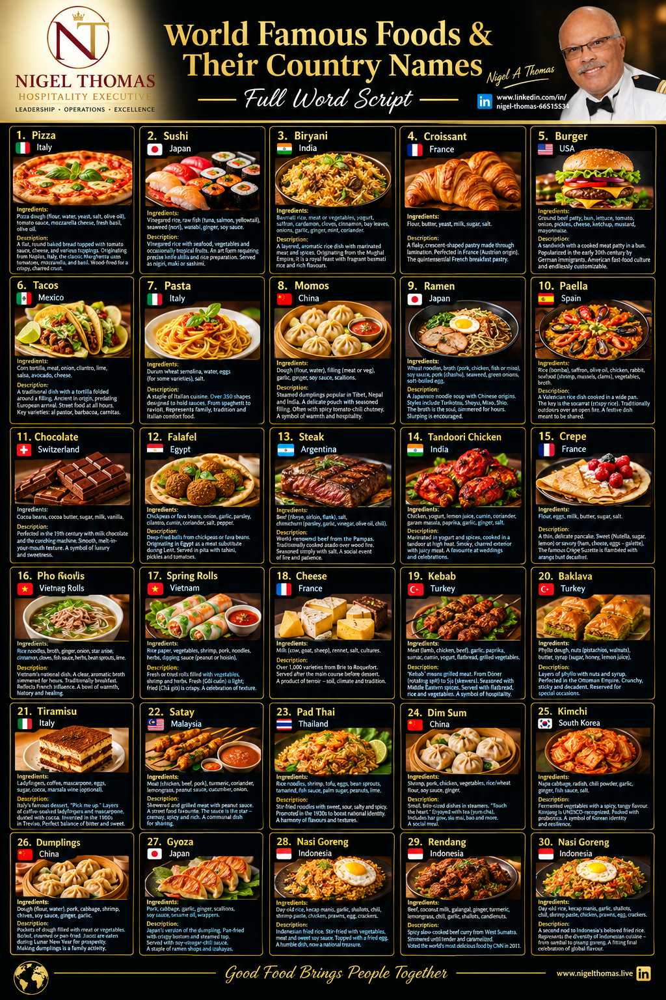

Full Word Script — A Culinary Journey Across 30 Iconic Dishes
Description: A flat, round baked bread topped with tomato sauce, cheese, and various toppings. Originating from Naples, Italy, the classic Margherita uses tomatoes, mozzarella, and basil to represent the Italian flag. Cooked in a wood-fired oven for a crispy, charred crust.
Description: Vinegared rice combined with seafood, vegetables, and occasionally tropical fruits. It is an art form requiring precise knife skills and rice preparation. Served as nigiri (fish over rice), maki (rolled), or sashimi (raw fish alone).
Description: A layered, aromatic rice dish cooked with marinated meat and a complex blend of spices. Originating from the Mughal Empire, it is a royal feast. Each region has its own version, but all feature fragrant basmati rice and rich, spiced flavors.
Description: A flaky, crescent-shaped pastry made through lamination—folding butter into dough repeatedly to create hundreds of layers. Although Austrian in origin (kipferl), it was perfected in France. It is the quintessential French breakfast pastry.
Description: A sandwich consisting of a cooked meat patty placed inside a sliced bun. Popularized in the United States in the early 20th century by German immigrants. It represents American fast-food culture and is endlessly customizable.
Description: A traditional Mexican dish consisting of a corn tortilla folded around a filling. Ancient in origin, predating European arrival. Eaten as street food at all hours. Key varieties include al pastor, barbacoa, and carnitas.
Description: A staple of Italian cuisine made from durum wheat and water. There are over 350 shapes, each designed to hold specific sauces. From spaghetti and penne to fettuccine and ravioli. It represents family, tradition, and Italian comfort food.
Description: Steamed dumplings popular across Asia, particularly in Tibet, Nepal, and India. A delicate pouch of dough filled with seasoned meat or vegetables. Often served with a spicy tomato-chili chutney. A symbol of warmth and hospitality.
Description: A Japanese noodle soup dish with Chinese origins. Each region has its own style—Tonkotsu, Shoyu, Miso, Shio. The broth is the soul, simmered for hours. Slurping is encouraged as a sign of appreciation.
Description: A Valencian rice dish cooked in a wide, shallow pan. The key is the socarrat—the crispy caramelized rice at the bottom. Traditionally cooked outdoors over an open fire. A festive dish meant to be shared.
Description: Switzerland is credited with perfecting chocolate in the 19th century by inventing milk chocolate and the conching machine. Swiss chocolate is known for its smooth, melt-in-your-mouth texture. A symbol of luxury and sweetness.
Description: Deep-fried balls or patties made from ground chickpeas or fava beans. Originating in Egypt as a meat substitute during Lent. Crispy outside, fluffy inside. Served in pita with tahini, pickles, and tomatoes.
Description: Argentina is world-renowned for its beef, thanks to the Pampas grasslands. The traditional method is asado—slow-cooking over an open wood fire. Seasoned simply with salt to let the natural flavor shine. A social event centered on fire and patience.
Description: A dish where chicken is marinated in yogurt and spices, then cooked in a tandoor (clay oven) at high heat. The result is a smoky, charred exterior with juicy meat. A favorite at Indian weddings and celebrations.
Description: A thin, delicate pancake from France. Can be sweet (with Nutella, sugar, lemon) or savory (with ham, cheese, eggs—known as a galette). The most famous is Crêpe Suzette, flambéed with orange butter and Grand Marnier.
Description: Vietnam's national dish—a bowl of rice noodles in a clear, aromatic broth simmered for hours. Traditionally eaten for breakfast. Reflects French colonial influence. A bowl of warmth, history, and healing.
Description: Fresh or fried rolls filled with vegetables, shrimp, and herbs wrapped in rice paper. Fresh version (Gỏi cuốn) is light and healthy. Fried version (Chả giò) is crispy and indulgent. A celebration of texture.
Description: France produces over 1,000 varieties of cheese, from soft Brie to pungent Roquefort. Cheese is a course in France, served after the main meal before dessert. A product of terroir—the soil, climate, and tradition of a region.
Description: The word "kebab" means grilled meat. From Döner Kebab (rotating spit) to Şiş Kebab (skewered cubes). Seasoned with Middle Eastern spices. Served with flatbread, rice, and grilled vegetables. A symbol of Turkish hospitality.
Description: A sweet pastry made of layers of phyllo dough filled with nuts and sweetened with syrup. Perfected in the Ottoman Empire's imperial kitchens. Crunchy, sticky, and decadent. Reserved for special occasions.
Description: Italy's most famous dessert. The name means "pick me up." Layers of coffee-soaked ladyfingers and mascarpone cream, dusted with cocoa. Invented in the 1960s in Treviso. A perfect balance of bitter and sweet.
Description: Skewered and grilled meat served with peanut sauce. A street food favorite in Malaysia and Indonesia. The peanut sauce is the star—creamy, spicy, and rich. A communal dish perfect for sharing.
Description: Thailand's national dish—stir-fried rice noodles with a perfect balance of sweet, sour, salty, and spicy. Promoted in the 1930s to boost national identity. A harmony of flavors and textures.
Description: A Cantonese style of small, bite-sized dishes served in steamer baskets. The name means "touch the heart." Enjoyed with tea (yum cha). Includes har gow, siu mai, bao, and more. A social meal meant to be shared.
Description: Korea's soul food—fermented vegetables with a spicy, tangy flavor. The tradition of kimjang (communal making) is UNESCO-recognized. Packed with probiotics. A symbol of Korean identity and resilience.
Description: Pockets of dough filled with meat or vegetables, boiled, steamed, or pan-fried. Jiaozi are eaten during Lunar New Year for prosperity. Making dumplings is a family activity. The ultimate comfort food.
Description: Japan's version of the dumpling, originally from China. Pan-fried with a crispy bottom and steamed top. Served with soy-vinegar-chili dipping sauce. A staple of ramen shops and izakayas.
Description: Indonesian fried rice. The name means "fried rice." Made with day-old rice, stir-fried with vegetables, meat, and sweet soy sauce. Topped with a fried egg. A humble dish born from resourcefulness, now a national treasure.
Description: A spicy slow-cooked beef curry from West Sumatra. Simmered for hours until the liquid evaporates and the meat is tender and caramelized. Voted the world's most delicious food by CNN in 2011. Rich, complex, unforgettable.
Description: A second nod to Indonesia's beloved fried rice. This dish represents the incredible diversity of Indonesian cuisine—thousands of regional dishes from spicy sambal to sweet pisang goreng. A fitting final celebration of global flavor.
Click the button below to download the full high-resolution infographic poster featuring all 30 dishes.

⬇ Download Full Infographic Poster* Right-click and "Save Image As" if the download button does not work.
The complete guide to 30 iconic dishes, their origins, ingredients, and cultural stories. Includes downloadable poster.
From tagliatelle to ravioli—master the dough, the shapes, and the sauces that define Italian cuisine.
Discover the timeless recipes and techniques behind the world's most beloved mixed drinks.
Learn the essential spices for biryani, curries, and tandoori dishes—and how to balance them.
Elevate your menu with classic and creative pizza recipes fit for professional kitchens.
From Brie to Roquefort—a professional guide to the cheeses that define hospitality menus.
{kind=link}